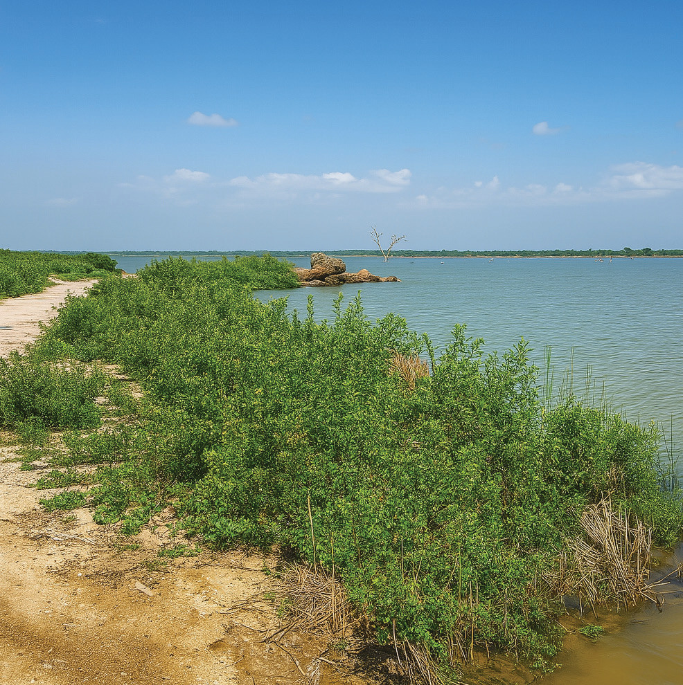

FOR ONLINE READING ONLY
Hombolo dam
Hombolo dam is located in the city of Dodoma, in Dodoma region.
Its source is the Kinyasungwe River.
This dam is important for irrigation agriculture, watering livestock, fishing, and domestic use in this drought-prone area.
Figure 8 indicates the part of the Hombolo dam.

Figure 8: The Hombolo dam
Source: https://www.biorxiv.org/content/10.1101/452847v2.Full
Rivers
Tanzania has many important rivers that provide water services for human beings, industry, animals, and plants.
These rivers flow across various districts and regions in the country.
Here are some notable rivers in Tanzania, along with their sources, pathways, and endpoints.
Rufiji River
The Rufiji is the longest river in Tanzania, originating from the Udzungwa Mountains in Iringa and Motogoro regions.
The tributaries of the Kilombero, Luwegu, and Great Ruaha rivers form the Rufiji River, flowing through various regions, including Morogoro and Pwani regions.
The river empties into the Indian Ocean through the Rufiji Delta in the Pwani region.
The Rufiji River is important for irrigation in the areas it passes, particularly in the Kilombero valley and in the Lower Rufiji basin, which are famous for rice cultivation.
Moreover, the Rufiji River basin is home to diverse wildlife and supports ecological systems.
Moreover, the Rufiji River contributes to various hydroelectric projects, such as the Julius Nyerere Hydroelectric Power Project.